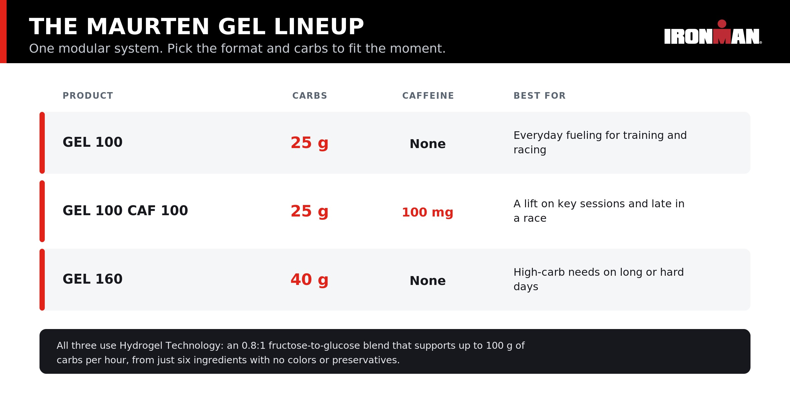

Ironman Bike
The Ironman bike leg, 112 miles through the respective host city. This is where it gets real yet this is where all your nerves about the race die. You just swam 2.4 miles, now you are saying to yourself "the swim wasnt that bad, lets go kick some butt". While transitioning from the swim to bike you are running to where your bike is placed and trying to unzip and remove the top portion of your wetsuit. Once you get to your bike and remove your wetsuit you start gearing up for for the a 6-8 hour ride on the bike.
This sets the tempo for the rest of the race, 6-8 hours on a bike is mentally and physcially exhausting. Nutrtion plays the biggest factor right here. If you dont fuel correctly you wont even make it to the run.
Statistic show you should be intaking about 100g of carbs an hour. Its important to not intake too little or too much. Too little and you start underperforming and slowly start letting off the gas.
Too many carbs and you blow up your stomach and therefore cant intake food, water or electrolytes which also results in letting off the gas and being more physcially exhasuted.

The other part of the bike besides nutrion is obviously biking 112 miles. This portion of the race is suprisingly pretty calming and the funnest part of the race, atleast in my opinon. You set off at a pace that pushes you but your are comftorable with, otherwise known as race pace. For 112 miles you are peddaling and enjoying the city scenary from start of the water to around the outskirts of the host city enjoying everything it has to offer. As you get to the end of the bike course you make your way most of the time to the downtown area otherwise known as finish line area. Then congrats you have made it to the ironman village where the run starts and the race finish line is in sight.